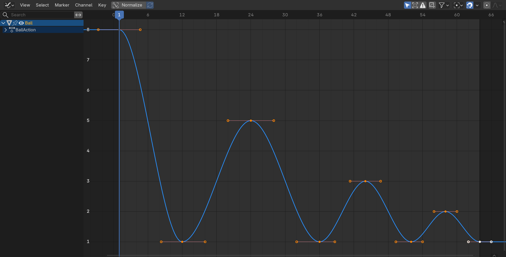
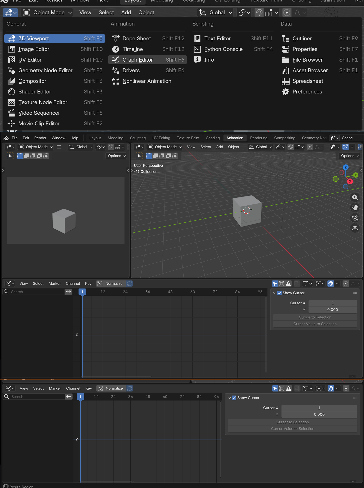
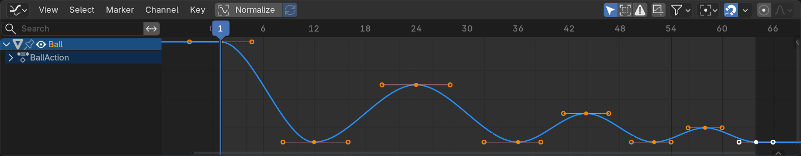
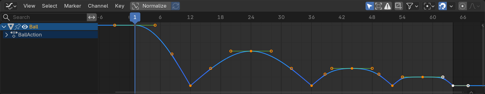
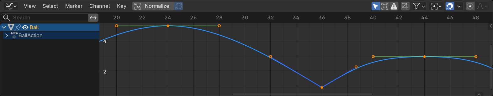
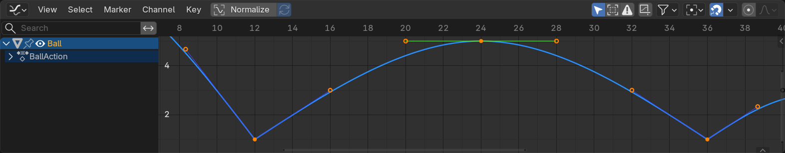

🎯 Learning Objectives
By the end of this lesson, you will be able to:
- Navigate and understand the Graph Editor interface
- Read and interpret F-Curves (animation curves)
- Manipulate curve handles for precise timing control
- Use different handle types for various easing effects
- Apply F-Curve modifiers for complex motion
- Perfect animation timing through curve refinement
- Troubleshoot and fix common curve problems
- Apply professional curve-shaping techniques
📋 What You'll Learn
- Time Required: 90-120 minutes
- Difficulty: Intermediate
- Prerequisites: Lessons 24-25 (Animation Fundamentals, Timeline/Keyframes)
- Project: Refine bouncing ball animation using Graph Editor
In This Lesson
🎨 What is the Graph Editor
The Graph Editor visualizes animation as mathematical curves. Each curve represents how a property changes over time. Understanding these curves is the difference between amateur animation and professional work.
Why the Graph Editor Matters
🔍 The Missing Piece
What you've learned so far:
- Lesson 24: Principles—what makes animation work
- Lesson 25: Keyframes—defining key poses and moments
- Interpolation: Blender calculates values between keyframes
- But you haven't controlled HOW Blender interpolates
Graph Editor gives you control:
- See exactly how values change frame-by-frame
- Adjust acceleration and deceleration precisely
- Perfect timing by reshaping curves
- This is where "slow in/slow out" actually happens
Timeline vs Dope Sheet vs Graph Editor:
- Timeline: "Animation exists" (diamonds show keyframes)
- Dope Sheet: "When keyframes happen" (timing relationships)
- Graph Editor: "How motion happens" (acceleration, easing, curves)
- All three views show same data, different perspectives
The professional difference:
- Amateurs keyframe and hope interpolation looks good
- Professionals keyframe, then refine curves until perfect
- Graph Editor refinement is 50% of professional animation time
- This is where "good enough" becomes "amazing"
F-Curves Explained
📊 Understanding Animation Curves
F-Curve = Function Curve:
- Mathematical function describing value over time
- Horizontal axis = Time (frames)
- Vertical axis = Value (location, rotation, scale, etc.)
- Curve shape = How value changes
Example: Ball rising and falling
- Frame 1: Ball at ground (Z = 0)
- Frame 24: Ball at peak (Z = 5)
- Frame 48: Ball at ground (Z = 0)
- F-Curve shows this as arc: up, then down
Curve shape reveals motion quality:
- Smooth curve: Natural, organic motion
- Straight line: Constant speed (robotic)
- Sharp angle: Sudden change (impact, instant direction change)
- Wavy curve: Oscillating motion (vibration, wobble)
Every animated property has its own F-Curve:
- Location X → one curve
- Location Y → separate curve
- Location Z → separate curve
- Same for Rotation and Scale
- Each curve editable independently
What F-Curves Show You
🔬 Reading Motion at a Glance
Curve steepness = Speed:
- Steep slope: Fast change (object moving quickly)
- Gentle slope: Slow change (object moving slowly)
- Horizontal line: No change (object stationary)
- Vertical line: Instant change (teleportation—rarely desired)
Curve direction = Motion direction:
- Upward slope: Value increasing (moving right/up/forward)
- Downward slope: Value decreasing (moving left/down/backward)
- Peak (top of arc): Maximum value, changing direction
- Valley (bottom of arc): Minimum value, changing direction
Curve smoothness = Motion quality:
- Smooth Bezier curves: Natural, organic (what you want 90% of time)
- Linear segments: Mechanical, constant speed
- Jagged, bumpy: Jerky motion (usually a problem)
- Sharp corners: Sudden impacts or direction changes
Visual example interpretation:
Curve shape: S-curve (ease in/out)
5 ┤ ╭─────╮
│ ╱ ╲
0 ┤─────╯ ╰─────
└─────┬─────┬─────┬
1 24 48 (frames)
Interpretation:
- Frames 1-12: Gentle slope (slow start)
- Frames 12-36: Steep slope (fast middle)
- Frames 36-48: Gentle slope (slow end)
= Natural ease in/out motion
When to Use Graph Editor
🎯 Knowing When to Dive In
Use Graph Editor when:
- Motion feels "off": Animation looks weird, need to diagnose
- Timing needs perfection: Getting close but not quite right
- Easing control: Need more or less ease in/out
- Speed variation: Want object to accelerate/decelerate specifically
- Subtle adjustments: Moving keyframes isn't enough
- Professional polish: Final 10% of quality
Don't need Graph Editor when:
- Blocking initial animation (keyframing major poses)
- Default Bezier interpolation already looks good
- Simple, forgiving animations (abstract shapes)
- Rough draft stage (refine later)
Professional workflow:
- Block: Set keyframes in Timeline/Dope Sheet
- Time: Adjust keyframe positions until roughly right
- Refine: Open Graph Editor, perfect curves
- Polish: Final micro-adjustments in Graph Editor
The 80/20 rule:
- 80% of animation happens in Timeline/Dope Sheet (keyframing, timing)
- 20% happens in Graph Editor (refinement, polish)
- But that 20% makes ALL the difference
- Separates good from great
💡 Curves Are Truth: Your animation might look smooth when you scrub through it. You might think it's done. Then you open the Graph Editor and see a jagged, chaotic mess of curves. The Graph Editor reveals what's really happening. It's like X-ray vision for animation—you can't lie to the curves. A bad curve always produces bad motion, even if you can't consciously identify why. This is why professionals obsessively check curves. They know: smooth curves = smooth motion. Always. No exceptions.
🖥️ Graph Editor Interface
The Graph Editor might look intimidating at first—lots of lines, numbers, and controls. But once you understand the layout, it becomes intuitive. Let's break it down piece by piece.

Opening the Graph Editor
📂 Getting Started
Method 1: Change editor type
- Any editor window → Editor Type icon (top-left)
- Select "Graph Editor" from dropdown
- Timeline becomes Graph Editor
Method 2: Use Animation workspace
- Top menu bar → Animation workspace
- Graph Editor usually visible by default
- Pre-configured animation layout
Method 3: Split window
- Hover on editor corner → drag to split
- Keep Timeline at bottom, Graph Editor in middle
- Professional setup: see both simultaneously
First time setup:
- Create simple animation (cube moving side to side)
- Frame 1: Cube at X=0, keyframe Location
- Frame 24: Cube at X=5, keyframe Location
- Open Graph Editor → You'll see your first curve!

Interface Layout
🗺️ Navigation and Panels
Left panel (Channel List):
- Shows all animated objects and properties
- Similar to Dope Sheet hierarchy
- Expandable tree: Object → Transform → Individual channels
- Click channel name to isolate its curve
- Can hide/show, lock, mute channels
Main area (Graph View):
- Horizontal axis: Time (frames)
- Vertical axis: Value (varies by property)
- Colored curves representing each channel
- Keyframes shown as dots/diamonds on curves
- Grid for reference
Header (top bar):
- View menu: Framing, navigation options
- Select menu: Selection tools
- Channel menu: Channel operations
- Key menu: Keyframe operations
- Marker menu: Frame markers
- View options: Grid, handles visibility
Sidebar (N panel):
- Press
Nto toggle - Shows selected keyframe properties
- Frame number, value, interpolation type
- Handle positions for precision editing
Navigation Controls
🧭 Moving Around the Graph
Essential shortcuts:
Middle Mouse Drag: Pan view (move around)Scroll Wheel: Zoom in/outCtrl + Middle Mouse Drag: Zoom (alternative)Home: Frame all curves (fit everything in view)Numpad .: Frame selected (zoom to selection)View → View All: Same as Home key
Precise navigation:
Shift + Middle Mouse: Pan vertically onlyCtrl + Shift + Middle Mouse: Zoom vertically only- Useful when adjusting timing vs adjusting values
Playback in Graph Editor:
Spacebar: Play animation (same as Timeline)- Blue playhead scrubs across graph
- Watch curve and viewport simultaneously
- See relationship between curve shape and motion
View options:
- Normalize: Scales all curves to fit (Header → View)
- Show handles: Display Bezier handles (default on)
- Only selected: Hide non-selected curves (declutter)
- Only errors: Show only problematic curves
Channel List Organization
📋 Understanding the Hierarchy
Typical hierarchy structure:
Cube (Object)
├─ Location
│ ├─ X Location [Red curve]
│ ├─ Y Location [Green curve]
│ └─ Z Location [Blue curve]
├─ Rotation Euler
│ ├─ X Euler Rotation [Red curve]
│ ├─ Y Euler Rotation [Green curve]
│ └─ Z Euler Rotation [Blue curve]
└─ Scale
├─ X Scale [Red curve]
├─ Y Scale [Green curve]
└─ Z Scale [Blue curve]
Color coding:
- Red curves: X-axis properties
- Green curves: Y-axis properties
- Blue curves: Z-axis properties
- Consistent with Blender's transform gizmo colors
- Easy visual identification
Channel visibility controls:
- Eye icon: Show/hide curve in graph
- Lock icon: Prevent editing (protect curve)
- Speaker icon: Mute channel (temporarily disable)
- Click channel name: Toggle visibility
Isolating curves:
- Select single channel → Only that curve visible
- Shift+Click channels → Multiple curves visible
- Essential for complex objects with many curves
- Can't edit what you can't see clearly
Graph Customization
⚙️ Personalizing Your Workspace
Grid and guides:
- View → Show Grid: Toggle background grid
- Grid helps identify exact frame/value positions
- Adjustable spacing in preferences
Handle display:
- View → Show Handles: Toggle Bezier handles
- Usually want ON (need to see handles to edit)
- Can turn off for cleaner view when just observing
Curve smoothness:
- Curves drawn as smooth lines (interpolated)
- Not actual keyframe-by-keyframe values
- Visual representation of mathematical curve
Professional setup tips:
- Keep Timeline visible below Graph Editor (see both)
- Use large Graph Editor window (details matter)
- Enable all view helpers (grid, handles, etc.)
- Learn to quickly isolate channels (less visual noise)
💡 Your New Animation Home: At first, the Graph Editor feels foreign—numbers, curves, axes. But after working here awhile, something clicks. You start seeing animation differently. You stop thinking "the ball moves here," and start thinking "the curve should ease out like this." You internalize curves as motion. When that happens, you've graduated from button-pusher to animator. The Graph Editor stops being a tool and becomes an extension of your creative vision. Every professional animator lives in this space. Make it your home too.
📖 Reading F-Curves
Before you can edit curves, you need to read them fluently. Learning to interpret curve shapes is like learning to read music—once you understand the language, you can see motion before it happens.
Basic Curve Interpretation
🔤 The Curve Alphabet
Straight line (Linear):
Value
5 ┤ ╱
│ ╱
│ ╱
0 ┤─────╯
└─────┬─────┬
1 24 (frames)
- Means: Constant speed from start to end
- Motion feel: Robotic, mechanical
- When you see it: Linear interpolation mode
- Usually indicates: Needs refinement to Bezier
S-curve (Bezier ease in/out):
Value
5 ┤ ╭────
│ ╱
│ ╱
0 ┤────╯
└─────┬─────┬
1 24 (frames)
- Means: Slow start, fast middle, slow end
- Motion feel: Natural, organic
- When you see it: Default Bezier interpolation
- Usually indicates: Good motion (what you want)
Sharp peak (Mountain):
Value
5 ┤ ╱╲
│ ╱ ╲
│ ╱ ╲
0 ┤─╯ ╰─
└─────┬─────┬
1 24 (frames)
- Means: Quick rise, instant reverse
- Motion feel: Sharp, snappy
- When you see it: Bounce peak, apex of jump
- Usually indicates: Could soften peak for natural motion
Flat plateau (Hold):
Value
5 ┤────────────
│
│
0 ┤
└─────┬─────┬
1 24 (frames)
- Means: No change, value held constant
- Motion feel: Stationary, paused
- When you see it: Object at rest or between keyframes with constant interpolation
- Usually indicates: Intentional hold or waiting
Advanced Curve Reading
🎓 Deeper Analysis
Steep vs gentle slopes:
Steep (fast): Gentle (slow):
5 ┤ ╱ 5 ┤ ╱
│ ╱ │ ╱
│ ╱ │ ╱
0 ┤╯ 0 ┤──╯
└──┬── └────┬────
12 24
- Steep: Large value change in few frames (fast motion)
- Gentle: Small value change over many frames (slow motion)
- Same distance traveled, different timing
- Controls perceived speed without changing keyframe values
Curve direction changes:
- Peak (local maximum): Motion reaches highest point, starts descending
- Valley (local minimum): Motion reaches lowest point, starts rising
- Inflection point: Curve changes from concave to convex (acceleration changes)
- Each direction change = keyframe or tangent adjustment
Curve smoothness quality:
- Smooth curve: Continuous motion, no sudden changes
- Bumpy curve: Oscillating motion, vibration (might be intentional or error)
- Jagged curve: Jerky motion, usually indicates problem
- Sharp corner: Instant direction change (impact, collision)
Symmetry analysis:
- Symmetrical curve: Same ease in/out (up and down match)
- Asymmetrical curve: Different ease in/out (intentional variation)
- Example: Ball falls slowly, bounces back quickly (asymmetric)
- Symmetry or asymmetry should be intentional choice
Real-World Curve Examples
🌍 Common Animation Patterns
Bouncing ball Z location curve:
Height
5 ┤ ╱╲ ╱╲
│ ╱ ╲ ╱ ╲╱╲
0 ┤╯ ╰╯ ╰──
└──┬───┬───┬───
10 20 30 (frames)
- Parabolic arcs (gravity)
- Decreasing peak heights (energy loss)
- Sharp valleys at ground contact (impact)
- Smooth peaks at apex (hang time)
Door rotation curve (opening):
Rotation
90°┤ ╭────
│ ╱
│ ╱
0°┤───╯
└─────┬─────┬
1 24 (frames)
- S-curve (ease in/out)
- Slow start (door begins moving)
- Fast middle (door swinging)
- Slow end (door settling at open position)
Camera push-in (dolly) curve:
Distance
10 ┤───╮
│ ╲
│ ╲
0 ┤ ╰────
└─────┬─────┬
1 24 (frames)
- Ease in/out but descending
- Camera starts far, moves close
- Smooth professional camera move
- Value decreases (distance to subject reduces)
Pulsing glow (emission) curve:
Emission
5 ┤ ╱╲ ╱╲ ╱╲
│ ╱ ╲╱ ╲╱ ╲
0 ┤╯ ╰
└──┬───┬───┬──
8 16 24 (frames)
- Repeating wave pattern
- Smooth sinusoidal motion
- Creates pulsing/breathing effect
- Could be created with Cycles modifier
Diagnostic Reading
🔍 Identifying Problems
Problem: Animation feels robotic
- Curve symptom: Straight lines between keyframes
- Cause: Linear interpolation
- Solution: Change to Bezier (
T→ Bezier)
Problem: Motion feels sluggish
- Curve symptom: Very gentle slopes throughout
- Cause: Too much easing, not enough speed variation
- Solution: Adjust handles to create steeper middle section
Problem: Object "floats" unnaturally
- Curve symptom: Perfectly symmetrical up/down curves
- Cause: No gravity effect (should fall faster than rise)
- Solution: Make downward slope steeper, upward slope gentler
Problem: Animation jerks/stutters
- Curve symptom: Jagged curve with many small bumps
- Cause: Too many keyframes, conflicting tangents
- Solution: Delete extra keyframes, smooth remaining curves
Problem: Motion overshoots target
- Curve symptom: Curve goes beyond final keyframe value, then returns
- Cause: Handle extends too far past keyframe
- Solution: Adjust handle length or use vector handles
Comparing Multiple Curves
🔀 Multi-Channel Analysis
Location X, Y, Z together:
- Viewing all three location curves reveals movement path
- If all three curve smoothly → 3D motion is smooth
- If one curve is linear while others are Bezier → motion feels weird
- Check that curves work together harmoniously
Example: Diagonal movement
- X Location: Smooth S-curve (left to right)
- Y Location: Also smooth S-curve (forward)
- Z Location: Flat (no height change)
- Result: Smooth diagonal slide across ground
Synchronized timing:
- All curves should reach peaks/valleys at logical times
- Example: Ball bounce—all channels peak together at apex
- Misaligned peaks = motion feels disconnected
- Graph Editor reveals these timing relationships
Relative curve shapes:
- Similar curve shapes on different channels = unified motion
- Different curve shapes = intentional complexity or problem
- Example: X and Y both S-curves → smooth 2D path
- Example: X S-curve, Y linear → feels disjointed
💡 Curves Don't Lie: Your viewport might play back at choppy framerates. Your eye might miss subtle problems. But curves tell the mathematical truth. A jerky curve produces jerky motion—always. A smooth curve produces smooth motion—always. Learn to trust curves over visual playback. When curves look perfect and motion still feels wrong, the problem is elsewhere (maybe posing, maybe timing). But if curves look wrong, motion is definitely wrong. Fix the curves first. They're your source of truth.
🎣 Understanding Handles
Handles are your primary tool for shaping curves. These small lines extending from keyframes control curve shape between keys. Mastering handles is mastering motion control.
What Are Handles?
🔧 Bezier Curve Controllers
Handle anatomy:
- Keyframe: Diamond/dot on curve (the anchor point)
- Handle: Line extending from keyframe
- Handle endpoint: Small circle at end of handle
- Most keyframes have two handles: one before, one after
How handles work:
- Handles define curve tangent (slope) at keyframe
- Handle direction: Which way curve goes
- Handle length: How much influence over nearby curve
- Longer handle = more influence = gentler curve
- Shorter handle = less influence = sharper curve
Handle directions:
- Horizontal handle: Flat tangent (no value change)
- Vertical handle: Instant value change (usually bad)
- Angled handle: Gradual value change (most common)
- Handle angle determines ease in/out strength
Visual representation:
Handle endpoint ●─────────────╮
│
● Keyframe
│
Handle endpoint ●─────────────╯
Left handle controls curve BEFORE keyframe
Right handle controls curve AFTER keyframe
Handle Manipulation Basics
✋ Moving and Adjusting
Selecting handles:
- Click keyframe → Both handles selected (appear visible)
- Click handle endpoint → That handle selected individually
- Can select multiple handles with Shift+Click
- Box select (
B) works on handles too
Moving handles:
- Select handle endpoint
- Press
G(Grab) to move freely GthenXorY: Constrain to axis- Move mouse to reshape curve
- Click to confirm,
Escto cancel
Rotating handles:
- Select keyframe (both handles)
- Press
R(Rotate) - Both handles rotate together (stay aligned)
- Changes curve approach angle
Scaling handles:
- Select keyframe or individual handle
- Press
S(Scale) - Makes handles longer (more ease) or shorter (less ease)
Sthen number: Scale by exact amount (e.g.,S2= double length)
Resetting handles:
- Select keyframe
- Key → Clear Keyframe (Handles)
- Or:
Alt+H(resets to auto handles) - Returns to default Bezier shape
Handle Length and Influence
📏 Size Matters
Long handles (gentle ease):
5 ┤ ╭─────────
│ ╱
│ ╱
0 ┤────╯
└──────┬──────┬
Long handle = gradual curve
- Curve changes gradually over many frames
- Strong ease in/out effect
- Motion feels smooth and flowing
- Good for: Organic motion, large objects, graceful movements
Short handles (sharp ease):
5 ┤ ╭──
│ ╱
│ ╱
0 ┤──╯
└──────┬──────┬
Short handle = sharp curve
- Curve changes quickly over few frames
- Minimal ease in/out effect
- Motion feels snappy and responsive
- Good for: Quick reactions, small objects, mechanical movements
Handle length guidelines:
- Heavy objects: Long handles (slow to start/stop)
- Light objects: Short handles (quick to start/stop)
- Dramatic moment: Long handles (emphasize motion)
- Quick action: Short handles (rapid response)
Common mistake: Handles too long
- Default Blender handles sometimes too long for style
- Creates overly smooth, floaty motion
- Solution: Scale handles down (
S0.5= half length) - Adjust to match desired motion energy
Handle Angles and Direction
📐 Angle of Approach
Horizontal handles (flat tangent):
5 ┤ ─●─────────●─
│
0 ┤
└────┬─────┬────
Horizontal = no value change
- Creates flat plateau at keyframe
- Object pauses before continuing
- Good for: Apex of jump, peak of arc, held poses
- Creates "hang time" feeling
Angled handles (sloped tangent):
5 ┤ ╱●─────────
│ ╱
0 ┤──╯
└────┬─────┬────
Angled = continuous motion
- Creates smooth continuous motion through keyframe
- No pause, object keeps moving
- Good for: Flowing motion, passing through positions
- Most common handle angle
Steep handles (sharp tangent):
5 ┤ │●─────────
│ │
0 ┤───╯
└────┬─────┬────
Steep = rapid change
- Near-vertical handle (not quite vertical)
- Very rapid value change
- Good for: Impacts, snaps, instant reactions
- Use sparingly—can look unnatural
Opposing handle directions:
- Left handle up, right handle down = peak
- Left handle down, right handle up = valley
- Both handles horizontal = plateau
- Both handles angled same way = smooth pass-through
Common Handle Patterns
🎨 Practical Applications
Pattern 1: Ease in/out (S-curve)
- First keyframe: Left handle horizontal, right handle angled
- Last keyframe: Left handle angled, right handle horizontal
- Creates classic slow-fast-slow motion
- Use for: Most organic movements
Pattern 2: Ease in only
- First keyframe: Right handle angled gently
- Last keyframe: Left handle angled steeply
- Slow start, then constant speed
- Use for: Object accelerating to constant velocity
Pattern 3: Ease out only
- First keyframe: Right handle angled steeply
- Last keyframe: Left handle angled gently
- Constant speed, then slow stop
- Use for: Object decelerating from constant velocity
Pattern 4: Bounce (sharp valley)
- Impact keyframe: Both handles short and steep
- Creates sharp V-shape
- Quick direction reversal
- Use for: Ball bounces, impacts
Pattern 5: Overshoot (anticipation)
- Handle extends past target, then curve returns
- Creates small overshoot before settling
- Adds energy and life to motion
- Use for: Springy objects, cartoon motion
💡 Handles Are Your Paint Brushes: Moving keyframes controls timing—when things happen. Moving handles controls feeling—how things happen. You can have perfect keyframe timing and terrible motion if handles are wrong. Think of handles as paint brushes. Long, sweeping strokes (long handles) create flowing, graceful motion. Short, precise strokes (short handles) create tight, controlled motion. The shape you paint with handles is the shape of motion itself. Handles aren't technical details—they're your primary creative tool for motion quality.
✏️ Editing Curves and Keyframes
Now that you understand curves and handles, let's dive into practical editing. These techniques let you refine animation with surgical precision, transforming good motion into exceptional motion.
Selecting in the Graph Editor
🎯 Choosing What to Edit
Selecting keyframes:
- Click keyframe: Select single keyframe (and its handles)
- Shift+Click: Add to selection (multiple keyframes)
- Box select (
B): Draw rectangle around keyframes - Circle select (
C): Paint selection with circle brush - Select all (
A): All visible keyframes
Selecting by channel:
- Click channel name in left panel → All keyframes on that curve
- Shift+Click multiple channels → Select keyframes on multiple curves
- Useful for editing entire property at once
Selecting handles independently:
- Click handle endpoint circle → Select just that handle
- Can edit left and right handles separately
- Advanced control for asymmetric easing
Selection tips:
- Selected keyframes appear highlighted (brighter)
- Active keyframe has white outline
- Selected handles appear as lines, unselected are invisible
- Box select is fastest for multiple keyframes
Moving Keyframes in Graph Editor
⏰ Adjusting Timing and Values
Basic movement:
- Select keyframe(s)
- Press
G(Grab/Move) - Move horizontally = change timing (when)
- Move vertically = change value (what)
- Click to confirm,
Escto cancel
Constrained movement:
GthenX: Move horizontally only (timing adjustment)GthenY: Move vertically only (value adjustment)Shiftwhile moving: Fine control (slower movement)Ctrlwhile moving: Snap to grid
Numerical input:
GX12: Move 12 frames rightGY2.5: Move up by 2.5 unitsGX-6: Move 6 frames left- Precise movement when you know exact amount
When to move keyframes in Graph Editor vs Timeline:
- Graph Editor: When adjusting values (height of jump, rotation amount)
- Timeline: When only adjusting timing (when things happen)
- Graph Editor gives both timing AND value control
- Use whichever is more convenient for task
Scaling Keyframes
📏 Stretching and Compressing
Time scaling (horizontal):
- Select keyframes
SthenX: Scale horizontally (timing)- Scale > 1.0: Slow down animation (keyframes spread apart)
- Scale < 1.0: Speed up animation (keyframes compress together)
- Same as scaling in Timeline, but with visual curve feedback
Value scaling (vertical):
- Select keyframes
SthenY: Scale vertically (values)- Scale > 1.0: Exaggerate motion (larger values)
- Scale < 1.0: Reduce motion (smaller values)
- Useful for adjusting jump height, rotation amount, etc.
Example: Making jump twice as high
- Select Z Location keyframes
SY2(scale vertically by 2x)- All height values doubled
- Timing unchanged, only height affected
Pivot point for scaling:
- Scaling happens from pivot point
- Header → Pivot Point dropdown
- 2D Cursor: Scale from playhead position (default)
- Individual Origins: Each keyframe scales from itself
- Change pivot to control scaling behavior
Duplicating Keyframes
📋 Copy and Repeat
Duplicate in Graph Editor:
- Select keyframe(s)
Shift+D: Duplicate- Move duplicates to new position
- Click to place,
Escto cancel
Copy and paste:
Ctrl+C: Copy selected keyframes- Move to target frame
Ctrl+V: Paste keyframes- Copies keyframes with exact values and handle shapes
Use cases:
- Repeating motion: Copy walk cycle, paste to extend
- Symmetry: Copy left arm animation to right arm
- Templates: Copy complex curve shape to reuse
- Maintains curve quality when repeating
Deleting and Cleaning
🗑️ Removing Keyframes
Delete keyframes:
- Select keyframe(s)
- Press
XorDelete - Curve interpolates between remaining keyframes
- Verify result looks good after deletion
Clean keyframes (automatic cleanup):
- Channel → Clean Channels
- Removes redundant keyframes automatically
- Keyframes that don't change curve shape are deleted
- Useful after heavy editing or auto-keyframing
Decimate keyframes (reduce count):
- Channel → Decimate (Ratio)
- Removes percentage of keyframes while maintaining shape
- Good for simplifying overcomplicated curves
- Set ratio (0.5 = remove half of keyframes)
When to delete keyframes:
- Curve has too many keyframes (cluttered, hard to edit)
- Redundant keyframes not adding value
- Over-keyframing created stiff motion
- Simplifying to allow better interpolation
Smoothing and Refinement
🌊 Perfecting Curve Flow
Smooth keyframes (automatic):
- Select keyframes
- Key → Smooth Keys
- Adjusts keyframes for smoother curve flow
- Reduces sharp peaks and valleys
- Useful for fixing jagged, bumpy curves
Gaussian smooth (advanced):
- Key → Smooth Keys → Gaussian Smooth
- More sophisticated smoothing algorithm
- Adjustable filter width
- Better preservation of overall curve shape
Sample keyframes (bake):
- Key → Sample Keyframes
- Creates keyframe on every frame
- Converts modifier or constraint to actual keyframes
- Use when you need frame-by-frame control
Manual smoothing technique:
- Identify problem area (sharp angles, bumps)
- Select keyframes in that region
- Adjust handles to create smoother flow
- Sometimes delete middle keyframe, let interpolation smooth
- Iterate until curve flows naturally
Snapping and Precision
🎯 Exact Placement
Snap to frame:
- Header → Magnet icon (enable snapping)
- Or hold
Ctrlwhile moving keyframes - Keyframes snap to whole frame numbers
- Prevents accidentally placing on sub-frames
Snap to value:
- With snapping enabled
- Moving vertically snaps to grid values
- Useful for exact positions (location = 0, rotation = 90°)
Snap to cursor:
- Select keyframes
- Key → Snap → Selection to Cursor Value
- All selected keyframes jump to cursor's vertical position
- Useful for aligning multiple keyframes to same value
Numerical input for precision:
- Select keyframe
- Press
Nto open sidebar - Active Keyframe panel shows exact frame and value
- Type exact numbers for pixel-perfect placement
Mirror and Flip
🪞 Creating Symmetry
Mirror keyframes:
- Select keyframes
- Key → Mirror → By Times over Current Frame
- Keyframes flip horizontally around playhead
- Creates reversed timing (motion plays backward)
Mirror by values:
- Key → Mirror → By Values over Cursor Value
- Keyframes flip vertically around cursor
- Inverts motion (up becomes down)
- Useful for creating opposite motion
Example use: Perfect pendulum swing
- Animate pendulum swinging right (frames 1-24)
- Copy frames 1-24, paste at frame 25
- Mirror pasted frames by values
- Creates symmetric left swing automatically
💡 The Graph Editor is a Precision Instrument: Timeline editing is like using a sledgehammer—great for rough work. Graph Editor is like using a scalpel—perfect for precision. When you need to adjust timing by 2 frames, Timeline works fine. When you need to adjust the apex of a jump by 0.3 units while maintaining perfect ease in/out, Graph Editor is essential. Don't fear the precision. Embrace it. This level of control is what separates "good enough" from "professional quality." Those extra hours professionals spend in the Graph Editor? That's where the magic happens.
🎛️ Handle Types Mastery
Blender offers several handle types, each creating different curve behaviors. Understanding when to use each type gives you complete control over motion quality. This is advanced technique, but essential for professional work.
The Six Handle Types
🔧 Complete Toolkit
1. Automatic (Auto):
- Behavior: Blender calculates handle automatically for smooth curve
- Appearance: Handles point toward neighboring keyframes
- When to use: Default—works great most of the time
- Pros: Effortless, reliable, smooth curves
- Cons: Less control, may not match exact desired curve
2. Vector:
- Behavior: Creates straight line to next keyframe (no curve)
- Appearance: Handle points directly at next keyframe
- When to use: Linear motion, mechanical movements, impacts
- Pros: Predictable, no overshoot
- Cons: Sharp corners, not smooth
3. Aligned (Auto Clamped):
- Behavior: Like Auto, but prevents overshoot past keyframe value
- Appearance: Handles aligned but may be different lengths
- When to use: When you need smooth curves without overshoot
- Pros: Smooth and safe, no surprises
- Cons: Sometimes too conservative
4. Free:
- Behavior: Total manual control, left and right handles independent
- Appearance: Handles can point any direction, any length
- When to use: Complex curves, asymmetric easing, special effects
- Pros: Complete control
- Cons: Requires manual adjustment, easy to create bad curves
5. Aligned:
- Behavior: Left and right handles stay aligned (180°), but adjustable length
- Appearance: Handles form straight line through keyframe
- When to use: Smooth pass-through points, maintaining flow
- Pros: Smooth without sharp corners, controllable
- Cons: Can't create asymmetric easing
6. Constant (Step):
- Behavior: Hold value until next keyframe (no interpolation)
- Appearance: No handles visible
- When to use: Binary states (on/off), stop-motion effects
- Pros: Perfect for instant changes
- Cons: No smooth motion
Changing Handle Types
🔄 Switching Modes
Method 1: Keyboard shortcut
- Select keyframe(s)
- Press
V→ Handle Type menu appears - Choose: Free, Aligned, Vector, Automatic, Auto Clamped
- Fastest method for experienced users
Method 2: Key menu
- Select keyframe(s)
- Key → Handle Type → Choose type
- Same options as
Vmenu
Method 3: Right-click menu
- Right-click keyframe
- Handle Type → Choose option
- Context-sensitive, convenient
Applying to specific handle:
- Select just one handle endpoint (not whole keyframe)
- Press
Vor use menu - Changes only that handle, not both
- Allows asymmetric handle types (advanced)
Handle Type Decision Guide
🎯 Which Type When?
Use Automatic (Auto) for:
- 90% of keyframes (it's the reliable default)
- Organic character animation
- Camera moves
- Smooth flowing motion
- When you want Blender to handle curves intelligently
Use Vector for:
- Robot/mechanical animation (constant-speed segments)
- Impact frames (ball hitting ground)
- Straight-line motion intentionally
- Creating sharp corners in motion
- When you specifically need linear interpolation
Use Auto Clamped (Aligned) for:
- Values that shouldn't overshoot (prevent ball bouncing underground)
- Conservative smooth motion
- When Auto creates unwanted overshoot
- Safer alternative to Auto
Use Free for:
- Special curve shapes you can't get with Auto
- Asymmetric easing (different ease in vs ease out)
- Complex organic motion (settling, wobble)
- When you need complete manual control
- Advanced animation only
Use Aligned for:
- Pass-through keyframes (object moving through position)
- Maintaining smooth curve while adjusting handles
- When you want handle control but guaranteed smoothness
- Middle ground between Auto and Free
Use Constant for:
- Light switches (on/off instantly)
- Visibility toggling
- Stop-motion style animation
- Boolean properties (true/false)
Advanced Handle Techniques
🎨 Professional Tricks
Technique 1: Asymmetric easing
- Left handle: Vector (sharp ease in)
- Right handle: Auto (smooth ease out)
- Creates different ease strengths on each side
- Example: Object stops suddenly but starts smoothly
Technique 2: Creating overshoot/anticipation
- Set handle type to Free
- Drag handle past target value
- Curve goes beyond keyframe then returns
- Creates springy, energetic motion
Technique 3: Sharp impact then settle
- Impact keyframe: Vector handles (sharp)
- Next keyframe: Auto handles (smooth)
- Creates instant impact followed by gradual settle
- Perfect for bounce landings
Technique 4: Gradual acceleration
- First keyframe: Short Auto handle
- Second keyframe: Long Auto handle
- Creates very gradual start, strong acceleration at end
- Good for heavy objects starting to move
Technique 5: Mixing handle types
- Don't use same handle type for all keyframes
- Auto for most, Vector for impacts, Free for special cases
- Each keyframe can have different handle types
- Use the right tool for each moment
Common Handle Type Mistakes
⚠️ What Goes Wrong
Mistake 1: Using Vector everywhere
- Makes all motion linear and robotic
- Loses organic quality
- Solution: Use Auto as default, Vector only when needed
Mistake 2: Using Free without understanding it
- Creates chaotic, unpredictable curves
- Hard to control for beginners
- Solution: Stick with Auto until you need Free's flexibility
Mistake 3: Not using Auto Clamped for overshooting
- Auto handles can overshoot (curve goes past keyframe value)
- Ball bounces underground before returning
- Solution: Change to Auto Clamped to prevent overshoot
Mistake 4: Inconsistent handle types
- Randomly switching handle types without reason
- Creates inconsistent motion quality
- Solution: Be intentional—know why you're changing handle type
Mistake 5: Never changing from default
- Auto handles don't work perfectly for everything
- Some situations need different handle types
- Solution: Learn to recognize when Auto isn't optimal
💡 Handle Types: The Animator's Palette: Automatic handles are like using a standard brush—works great for most paintings. Vector handles are like using a ruler—creates perfect straight lines. Free handles are like using your fingers—total control but requires skill. Professional animators know all the brushes and choose the right one for each stroke. Amateurs stick with one brush for everything. The difference shows in the final work. Learn the handle types. Experiment with them. Discover which creates the motion you envision. That's the path from technician to artist.
🎚️ F-Curve Modifiers
F-Curve modifiers apply mathematical operations to your curves, creating complex motion without manually keyframing. Think of them as procedural animation—set parameters and let math do the work.
What Are F-Curve Modifiers?
🔮 Procedural Curve Generation
Modifier concept:
- Applied to F-Curve, affects entire curve (not individual keyframes)
- Non-destructive—can disable or remove anytime
- Calculated in real-time based on parameters
- Creates complex motion from simple keyframes
When to use modifiers:
- Repetitive motion: Oscillation, cycles, waves
- Random variation: Noise, camera shake, natural irregularity
- Mathematical patterns: Sine waves, stepped motion
- Extending animation: Loop short animation indefinitely
Modifier vs manual keyframing:
- Modifiers: Fast, adjustable, procedural (but less precise control)
- Keyframes: Precise, intentional, controllable (but time-consuming)
- Often combine: Keyframe major motion, add modifier for detail
Accessing modifiers:
- Graph Editor sidebar (
Nkey) → Modifiers tab - Or: Channel → Add Modifiers → Choose modifier
- Each curve can have multiple modifiers
Common F-Curve Modifiers
🛠️ Essential Modifiers
1. Cycles (Repeat Animation):
- Purpose: Loop animation indefinitely
- Use case: Walk cycles, rotating wheels, flashing lights
- Settings:
- Repeat: Loop exactly as animated
- Repeat with Offset: Each loop offsets (walking forward)
- Repeat Mirrored: Alternates forward/backward
- Example: Animate one wheel rotation (frames 1-24), Cycles makes it spin forever
2. Noise (Random Variation):
- Purpose: Add randomness/irregularity to motion
- Use case: Camera shake, flickering lights, natural imperfection
- Settings:
- Scale: Amount of noise (higher = more variation)
- Strength: Intensity of effect
- Phase: Offset pattern (different random seed)
- Example: Smooth camera pan + Noise modifier = handheld camera feel
3. Limits (Clamp Values):
- Purpose: Restrict curve values to range
- Use case: Prevent overshoot, enforce boundaries
- Settings:
- Min/Max X: Limit frame range
- Min/Max Y: Limit value range
- Example: Door rotation curve clamped 0-90° (can't open beyond 90°)
4. Stepped Interpolation:
- Purpose: Create stepped/discrete motion
- Use case: Stop-motion effect, frame-by-frame animation look
- Settings:
- Step Size: Frames per step (2 = hold every 2 frames)
- Example: Smooth animation + Stepped(2) = LEGO movie style
5. Generator (Mathematical Functions):
- Purpose: Create curves from polynomial equations
- Use case: Falling objects (gravity), mathematical motion
- Settings:
- Polynomial order: Linear, quadratic, cubic, etc.
- Coefficients: Fine-tune curve shape
- Example: Y = X² creates parabolic curve (projectile motion)
Using Modifiers Effectively
💡 Practical Application
Adding a modifier:
- Select channel in Graph Editor (e.g., Location Z)
- Sidebar (
N) → Modifiers tab - Add Modifier → Choose type (e.g., Noise)
- Adjust parameters in panel
- See effect on curve in real-time
Stacking modifiers:
- Can add multiple modifiers to one curve
- Execute in order from top to bottom
- Example: Cycles (loop) + Noise (variation) = looping with irregularity
- Drag to reorder, changes result
Restricting modifier range:
- Modifier settings → Frame Range
- Start/End frames: Only affect specific frame range
- Useful for applying noise only during certain section
Baking modifiers to keyframes:
- When satisfied with modifier result, can "freeze" it
- Key → Bake Curve (converts modifier to actual keyframes)
- Gives frame-by-frame control over previously procedural motion
- Can no longer adjust modifier parameters after baking
Modifier Examples
🎬 Real-World Scenarios
Example 1: Looping walk cycle
- Animate one step (frames 1-12)
- Location Z (up/down): Add Cycles modifier → Repeat
- Location X (forward): Add Cycles modifier → Repeat with Offset
- Result: Character walks forward indefinitely
Example 2: Handheld camera shake
- Animate smooth camera move
- Camera Location X, Y, Z: Add Noise modifier
- Scale: 1.0, Strength: 0.02 (subtle shake)
- Result: Professional smooth camera with realistic handheld jitter
Example 3: Flickering candle light
- Light Strength: Keyframe at 5.0
- Add Noise modifier
- Scale: 2.0, Strength: 1.0
- Result: Light randomly flickers around strength 5.0
Example 4: Bouncing ball that settles
- Animate initial bounce (3 bounces, decreasing height)
- Add Limits modifier
- Min Y: 0 (ground level—prevent underground)
- Result: Ball guaranteed never goes below ground
Modifier Limitations
⚠️ When Not to Use Modifiers
Modifiers don't work well for:
- Precise, choreographed motion: Character acting requires keyframe control
- Unique, one-time actions: Hero moment should be keyframed precisely
- Performance animation: Timing nuances need manual control
- Complex narrative animation: Story beats need intentional placement
Use keyframes instead when:
- Motion has specific meaning or emotional content
- Timing must be perfect (dialogue sync, music sync)
- Every frame matters to storytelling
- Client needs ability to approve specific poses
Best practice:
- Use modifiers for secondary motion and texture
- Use keyframes for primary performance and storytelling
- Modifiers augment keyframes, don't replace them
🎯 Project: Perfect Bounce with Graph Editor
Let's take the bouncing ball from Lesson 24 and perfect it using Graph Editor techniques. You'll refine curves, adjust handles, and achieve professional motion quality. This project demonstrates real-world Graph Editor workflow.
Project Overview
🎯 Your Mission
Refine a bouncing ball animation to professional quality:
- Perfect arcs: Smooth parabolic curves
- Proper easing: Natural acceleration/deceleration
- Realistic physics: Gravity-correct timing
- Clean curves: No bumps, overshoots, or glitches
- Handle mastery: Appropriate handle types for each keyframe
Duration: 30-45 minutes of focused refinement
Phase 1: Create Base Animation (10 min)
🛠️ Foundation
Setup scene:
- UV Sphere (ball), position at X=0, Y=0, Z=5
- Plane (ground), scale large
- Camera positioned to see full bounce arc
- Frame range: 1-96 (4 seconds)
Create basic bounce (rough blocking):
- Frame 1: Z=5, Scale 1,1,1 → Keyframe LocScale
- Frame 18: Z=0, Scale 1.4,1.4,0.6 → Keyframe LocScale
- Frame 30: Z=3.5, Scale 1,1,1 → Keyframe LocScale
- Frame 42: Z=0, Scale 1.3,1.3,0.7 → Keyframe LocScale
- Frame 52: Z=2, Scale 1,1,1 → Keyframe LocScale
- Frame 60: Z=0, Scale 1.2,1.2,0.8 → Keyframe LocScale
- Frame 66: Z=1, Scale 1,1,1 → Keyframe LocScale
- Frame 72: Z=0, Scale 1,1,1 → Keyframe LocScale (final settle)
Result: Rough bouncing ball with decreasing height
Phase 2: Open Graph Editor and Analyze (5 min)
🔍 Initial Assessment
Open Graph Editor:
- Split viewport or change Timeline to Graph Editor
- Ball selected → See Location and Scale curves
- Focus on Location Z (height curve)
What to look for:
- Curve shape: Should be parabolic arcs (bounces)
- Peaks: Should get progressively lower (energy loss)
- Valleys: Should be sharp at ground impact
- Overall flow: Smooth or jagged?
Common issues at this stage:
- Too much ease at ground (ball floats)
- Symmetrical up/down curves (unrealistic—gravity affects fall)
- Overshoot at peaks (ball goes higher than keyframe)
- Inconsistent handle types

Phase 3: Refine Location Z Curve (15 min)
📈 Perfecting the Height Curve
Fix ground impacts (frames 18, 42, 60, 72):
- Select impact keyframes (ground level, Z=0)
- Press
V→ Vector handles - Result: Sharp valleys (instant direction change at impact)
- Or: Keep Auto but manually make handles very short
Adjust apex keyframes (frames 1, 30, 52, 66):
- Select apex keyframes (peaks of bounce)
- Ensure handles are horizontal or near-horizontal
- Creates "hang time" at top of arc
- Can manually rotate handles (
R) to be more horizontal - Should see flat plateau at each peak
Create asymmetric curves (gravity effect):
- Rising (going up to apex): Gentler curve (slower rise)
- Falling (apex to ground): Steeper curve (faster fall)
- Select apex keyframe, adjust right handle to be steeper than left
- Gravity makes objects fall faster than they rise
Check for overshoot:
- Scrub through animation watching curve
- Does curve go below Z=0 (underground)? Fix it!
- Does curve go above apex keyframe value? May need Auto Clamped
- Change problematic keyframes to Auto Clamped or adjust handles
Smooth overall flow:
- Zoom out, view entire curve
- Should look like decreasing wave pattern
- No sudden bumps or irregularities
- If bumpy: Delete extra keyframes or adjust handles



Phase 4: Refine Scale Curves (10 min)
⚖️ Squash and Stretch Refinement
Isolate scale curves:
- Channel list → Click "Scale" to show all three scale curves
- Should see synchronized curves (X, Y, Z together)
Check squash timing (ground impacts):
- Squash should happen exactly at impact frames (18, 42, 60)
- Scale Z should dip, Scale X/Y should spike
- If timing off, move keyframes horizontally (
GX)
Adjust squash transition speed:
- Squash should be quick (short handles)
- Select squash keyframes
- Scale handles down (
S0.5) for snappier squash - Too much ease makes squash look sluggish
Ensure scale returns to neutral:
- At apex and final rest, scale should be 1,1,1 (neutral)
- Check these keyframes are exactly 1.0
- Use
Npanel to verify exact values
Verify volume preservation:
- When Scale Z decreases, Scale X/Y should increase proportionally
- All three curves should move together (synchronized)
- If one curve out of sync, adjust timing
Phase 5: Final Polish and Testing (5 min)
✨ Quality Check
Playback test:
- Press
Spacebarin Graph Editor - Watch both viewport and curves simultaneously
- Motion should feel natural, physics-correct
Frame-by-frame check:
- Scrub slowly through animation
- Watch curve closely—should be perfectly smooth
- No bumps, no sharp corners (except intentional impacts)
Curve aesthetics:
- Zoom out, view entire curve
- Should look beautiful—clean, flowing, purposeful
- If curve looks messy, motion will feel messy
Common final adjustments:
- Slightly increase hang time at apex (longer horizontal handles)
- Make ground impacts sharper (shorter handles at valleys)
- Ensure final bounce settles cleanly (smooth approach to rest)
Success Criteria
✅ Professional Quality Checklist
Curve quality:
- ✓ Location Z curve shows clean parabolic arcs
- ✓ Sharp valleys at ground impacts (Vector or short handles)
- ✓ Flat plateaus at apex (horizontal handles)
- ✓ Asymmetric curves (faster fall than rise)
- ✓ No overshoot below ground or above peaks
- ✓ Smooth overall flow, no unexpected bumps
Motion quality:
- ✓ Ball appears to have mass and weight
- ✓ Bounces decrease in height realistically
- ✓ Squash and stretch timed perfectly with impacts
- ✓ Natural hang time at peak of each arc
- ✓ No floating or hovering feeling
Technical execution:
- ✓ Appropriate handle types for each keyframe
- ✓ Handle lengths match motion energy
- ✓ Scale curves synchronized properly
- ✓ Volume preserved during squash/stretch
💡 Before and After: When you started this project, you had a bouncing ball that technically worked—it went up and down. Now you have a bouncing ball with soul. The difference? Curves. Those hours spent adjusting handles, tweaking easing, perfecting arcs—that's where animation lives. Every Pixar animator, every game cinematics artist, every motion graphics designer spends time doing exactly what you just did. Perfecting curves. This isn't busy work. This is the craft. And you just did it at a professional level.
📝 Lesson Summary
Congratulations! You've mastered the Graph Editor—the most powerful tool in an animator's arsenal. You now have professional-level control over timing, easing, and motion quality.
🎯 Key Takeaways
- Curves reveal truth: Motion quality lives in curve shape
- Handles control feeling: Same timing, different handles = different motion
- Smooth curves = smooth motion: Always, no exceptions
- Handle types matter: Auto, Vector, Free each have purpose
- Graph Editor is for refinement: Block in Timeline, perfect in Graph Editor
- Modifiers add complexity: Procedural detail on top of keyframes
- Professional polish happens here: This separates good from great
Graph Editor Mastery Recap
🎓 What You've Learned
Reading curves:
- Curve steepness = speed (steep = fast, gentle = slow)
- Curve direction = motion direction
- Curve smoothness = motion quality
- S-curves = natural ease in/out motion
Handle mastery:
- Handle length controls ease strength
- Handle angle controls motion flow
- Six handle types: Auto, Vector, Free, Aligned, Auto Clamped, Constant
- Auto for 90% of animation, others for special cases
Editing techniques:
- Move keyframes:
G(timing and values) - Scale keyframes:
S(stretch timing or values) - Change handle types:
V - Smooth curves: Key → Smooth Keys
- Clean keyframes: Channel → Clean Channels
Professional workflow:
- Block animation in Timeline (major poses)
- Time animation in Dope Sheet (keyframe placement)
- Refine in Graph Editor (curve perfection)
- Polish until curves are beautiful
- Result: Professional-quality motion
Essential Keyboard Shortcuts
⌨️ Speed and Efficiency
Navigation:
Home: Frame all curvesNumpad .: Frame selectedMiddle Mouse: Pan viewScroll Wheel: Zoom
Selection:
A: Select allAlt+A: Deselect allB: Box selectC: Circle select
Editing:
G: Move keyframes/handlesS: Scale keyframes/handlesR: Rotate handlesV: Change handle typeShift+D: DuplicateX: Delete
Interface:
N: Toggle sidebar (properties)Spacebar: Play animation
Next Steps
🚀 Continuing Your Journey
Practice exercises:
- Refine 5 different bouncing balls (heavy, light, energetic, tired, perfect)
- Create smooth camera push-in with perfect ease
- Animate pendulum swing with perfect arcs
- Make door open with custom easing (anticipation + settle)
- Create pulsing glow effect using only Graph Editor
Advanced challenges:
- Recreate curve from reference video (match timing exactly)
- Design custom ease curves for different emotions (happy = bouncy, sad = sluggish)
- Use F-Curve modifiers to create looping animations
- Combine multiple modifiers for complex motion
Coming next:
- Lesson 27: Basic Character Animation—apply everything to armatures
- You now have the tools to create professional motion
- Next lesson: Apply these skills to character rigs
Study professional work:
- Watch animations frame-by-frame
- Try to imagine what curves would look like
- Recreate shots you admire
- Learn from the masters by reverse-engineering their timing
📈 You're a Curve Master
The Graph Editor is where animation transforms from mechanical motion to living performance. Every professional animator you admire has spent thousands of hours staring at curves, adjusting handles, perfecting easing. They've learned to see motion as mathematics, to feel curves as performance.
You now have that same capability. When you open the Graph Editor, you're not looking at confusing lines anymore—you're looking at motion itself, laid bare. That S-curve? That's ease in/out. That sharp valley? That's impact. Those smooth, flowing arcs? That's professional animation.
Here's the secret that took me years to learn: The best animators don't have better keyframes than you. They have better curves. Same poses, same timing, but refined curves make all the difference. Now you can refine curves too. The playing field just leveled.
Spend time in the Graph Editor. Make it your second home. Every hour you invest here compounds—understanding curves at an intuitive level is what separates animators who can work from those who can excel. You're now equipped to excel.
Next: Apply these skills to character animation! 🎭